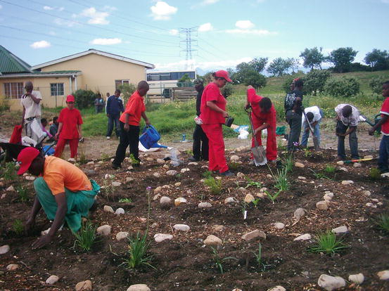
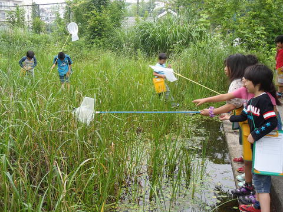
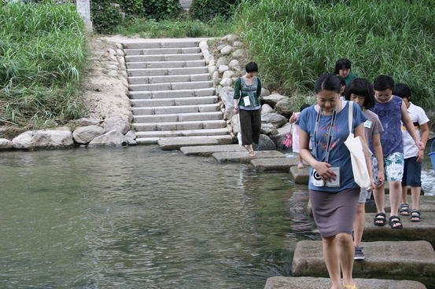
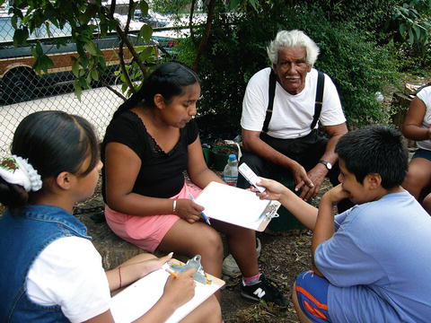

30.1 Environmental Education, Education for Sustainable Development (ESD), and Communication, Education and Public Awareness (CEPA): A Short Introduction
Growing out of a long tradition of nature study, and reflecting a growing concern about pollution and environmental degradation, environmental education was recognized as a critical factor in addressing environmental problems at the UN Conference on the Human Environment in Stockholm in 1972. Its goals focused on developing individual competencies to work toward solving problems, as articulated in the Belgrade Charter (UNESCO 1975) and ratified as the Tbilisi Declaration (UNESCO 1977), which states:
The goal of environmental education is to develop a world population that is aware of, and concerned about, the environment and its associated problems, and which has the knowledge, skills, attitudes, motivations and commitment to work individually and collectively toward solutions of current problems and the prevention of new ones.
Twenty years after the Stockholm conference that defined environmental education, the UN Conference on Environment and Development, otherwise known as the Rio Earth Summit, articulated and mandated Education for Sustainable Development (ESD) as critical to all aspects of Agenda 21.
1
Agenda 21 drew heavily from the Earth Charter,
2 which used a highly consensual process involving civil society organizations to articulate sustainability principles, in preparation for the 1992 Rio Summit. Consistent with the notion of sustainability outlined at the Summit, which was proposed as a more just alternative to a single-minded focus on the environment without regard to other aspects of human well-being, ESD integrates environmental with social and economic concerns. Agenda 21 Chapter 36 on ESD articulated four major thrusts that distinguish ESD from environmental education: access to basic education for all; reorienting education to embrace principles, skills, values, and perspectives related to sustainability; public awareness and understanding; and training for the private, university, government, and NGO sectors (Mckeown and Hopkins 2003). In short, whereas environmental education has focused predominantly on curriculum and activities whose aim is to change individual knowledge, attitudes, and behaviors, the intent of ESD was to effect far-ranging institutional change in educational systems. Such change would come about as government ministries of education proclaimed that sustainable development concepts, including equity, economic development, and environment, would be fused into national curricula (Hopkins 2012).
According to Hopkins (2012), ESD was intended not to be another “adjectival education” like environmental education conceived as an add-on to the school curricula, but rather to infuse all education with sustainability principles through a series of reports, assessments, and guides. Whereas the goals of ESD are clearly more encompassing than those generally associated with environmental education, many think of ESD as a more socially conscious form of environmental education, and some have pointed to a similar tradition of embracing equity and other social concerns in environmental education dating back to the 1970s (Monroe 2012). Lotz-Sisitka (2007) warns that regardless of one’s particular viewpoint, one should avoid focusing on the differences between environmental education and ESD, as this may be counter-productive to progress in these related fields over the past 30 years.
ESD implementation suffered in the 10 years following the Rio Summit as a result of limited recognition by governments and lack of an international funding structure. However, it gained in prominence following the launch of the Decade of Education for Sustainable Development at the 2002 Johannesburg World Conference on Sustainable Development. ESD received a further boost at the 2005 mid-decade Bonn meetings, which were attended by ministers and other high level education officials from nearly 100 countries (Hopkins 2012). Further, according to a 2012 report evaluating progress of the Decade, ESD is intended to permeate multiple aspects of learning beyond the classroom, and that such “boundary crossing” to other spheres can be a source of educational innovation.
The boundaries between schools, universities, communities and the private sector are blurring as a result of a number of trends, including the call for lifelong learning; globalization; information and communication technology (ICT)-mediated (social) networking education; the call for relevance in higher education and education in general; and the private sector’s growing interest in human resource development. The resulting ‘boundary crossing’ is reconfiguring formal, informal and nonformal learning and changing stakeholder roles and public-private relationships. This new dynamic provides a source of energy and creativity in education, teaching and learning, which itself provides a powerful entry point for ESD. (Wals 2012, p. 5–6)
A similar trend in environmental education of integrating multiple educational approaches across diverse settings, with an eye toward fostering educational innovation, can be found in environmental education (Krasny and Dillon 2014), including in cities (Kudryavtsev and Krasny in review).
In addition to spawning ESD, the 1992 Rio Earth Summit opened for signature the Convention on Biological Diversity (CBD), which now has over 190 affiliated parties.3 Article 13 of CBD addresses education, which is carried out through its Communication, Education and Public Awareness (CEPA) initiative. CEPA goals include:
The CEPA Toolkit outlines a process for implementing a biodiversity communication and education campaign to support the National Biodiversity Strategy and Action Plans (Hesselink et al. 2007). Also, in collaboration with ICLEI Local Governments for Sustainability and the City of Cape Town, the CBD has produced an Evaluation Design Toolkit (Rosenberg et al. 2012), and the CBD website links to numerous biodiversity curricula and educational activities.
Navarro-Perez and Tidball (2012) conducted a literature review of biodiversity education to help inform the CBD agenda. They identified lack of an agreed upon approach for biodiversity education, biodiversity as an ill-defined concept, messaging inappropriate to engaging the public in recognizing biodiversity as a concern, and people’s disconnect from nature as challenges to addressing CBD goals. Wals (2002) suggests leveraging this lack of agreement on the definition and importance of biodiversity as a tool to promote critical thinking and help students address normative issues as part of environmental education and ESD programs.
30.2 The “Urban” in Environmental Education, ESD, and CEPA
30.2.1 Urban Environmental Education and Learning Arenas in Cities
Kudryavtsev and Krasny (2012) compiled a history of urban environmental education in the USA dating back to an early 1900s practice of urban nature study, which continues today in city parks and other more natural urban settings. In the late 1960s, urban environmental education expanded from its focus on nature study to encompass the social concerns of urban residents, including those in low income and ethnic minority neighborhoods; thus issues of environmental justice, cultural diversity, poverty, and open space in cities were incorporated into environmental education programs at schools, churches, neighborhood councils, and community centers (Clark 1972; Verrett et al. 1990; Frank et al. 1994). Today, urban activities are incorporated into widely used environmental education curricula such as Project Learning Tree, Project Wet, and Project Wild, as well as in citizen science projects in which students and volunteers collect data on biodiversity and ecosystem services (e.g., the Great Sunflower Project,5 Project Monarch Watch6). In addition, several national environmental education programs focus specifically on urban settings. These include Garden Mosaics (Kennedy and Krasny 2005), an intergenerational, non-formal science education program that takes place in urban community gardens and integrates lessons about biological and cultural diversity alongside stewardship and action (see case studies below), and Celebrate Urban Birds,7 a network of urban community organizations that engage children in learning about city birds through art, data collection, and stewardship.
Zoos, natural history museums, botanic and city gardens, city parks, plazas adjacent to churches and government buildings, and other less formal green spaces such as school and community gardens and even ditches and canals, provide learning arenas for biodiversity education in cities (Bagarinao 1998; Kassas 2002; Gill 2011; Shwartz et al. 2012). Zoos are of particular interest given that over 600 million people (10 % of the world’s population) visit zoos annually, and many zoos are located in cities and have a long history of biodiversity and conservation education; albeit the mission and education programs of zoos generally focus on conservation of rare and charismatic species not generally found in cities (Whitehead 1995; Geser et al. 2009; Anon n.d. a). In the USA, zoos participate in partnerships of universities, museums, NGOs, schools, and youth organizations to offer more locally-based education, often with a strong science-inquiry focus. For example, Prospect Park Zoo and Fordham University engage high school students in comparative studies of insect biodiversity in managed and less managed spaces in New York City,8 and the American Museum of Natural History has partnered with the Bronx Zoo to involve students in self-guided scientific investigations of urban biodiversity using the web and mobile devices.9
Botanic gardens are visited by 200 million people each year, and often include collections of native species, thus offering important learning arenas for biodiversity (Willison 2006). Similar to zoos, they partner with community organizations and schools to tie learning opportunities at the formal gardens to issues facing the surrounding community (Wals 2002). For example, Kirstenbosch Botanic Garden in Cape Town, South Africa developed 46 indigenous gardens at schools in the Cape Flats townships (see case studies below).
City parks also can play an important role in urban environmental education. For example, the Sundarvan Nature Discovery Centre, one of multiple programs associated with the Centre for Environmental Education in India, engages youth in nature study in the city of Ahmedabad. Activities include nature hiking, snake ecology awareness, and bird watching. Also associated with the Centre for Environmental Education, the Nandanavanam project in Hyderabad conducts teacher workshops on nature education, and in collaboration with a city park, has developed a brochure describing a pond as a biodiversity hub in the center of the city.10
Museum exhibits often focus on biodiversity and more recently, ecosystem services. In Stockholm, Sweden, the non-profit Albaeco organized the exhibition “Manna – Food in a New Light,” which explains the provisioning ecosystem service of food production. The exhibit has been on tour since 2004 nationally and internationally attempting to reach urban audiences with a message about where their food comes from.11
Restoration practices of citizen activists, non-profits, and municipal governments provide arenas for active learning that contributes directly to sustainable management of urban biodiversity and ecosystem services. Urban restoration projects focusing on degraded or even paved over rivers, derelict transportation corridors, and neglected plots of land are becoming increasingly common, incorporating novel landscape features and learning opportunities. Examples include large-scale urban redesign projects such as the resurfacing of the buried Cheonggye-cheon River in Seoul, South Korea (see case study below, Sect. 30.6.3), and the conversion of elevated railroad beds in Paris and Manhattan to landscaped promenades. Smaller-scale efforts have the potential for more hands-on involvement of local residents, and include restoring ponds for dragonfly and fish in Japanese cities (see case study below, Sect. 30.6.2), reintroduction of oysters and fish into the Bronx River in New York City, and conversion of vacant lots to community gardens in cities across the USA and Canada (Krasny and Tidball 2012). These restoration projects linked to civic engagement are a relatively recent trend in urban planning and environmental activism (Sirianni and Friedland 2009) that create new kinds of informal learning arenas in cities. For more information on restoration ecology in an urbanizing world, see Chap. 31.
30.2.2 ESD and Urban Issues
As ESD has emphasized institutional change at the national level rather than specific programs or curricula, it has had less of a focus on specific settings such as cities. Although Sustainable Urbanization12 is included as one of 12 ESD themes, social rather than biodiversity or ecosystem processes in cities are emphasized. The Sustainable Urbanization theme states:
Learning to live together sustainably in cities is one of the most important educational challenges of our time. This requires a focus on:
Despite the relative lack of attention to urban biodiversity and ecosystem processes in ESD, local sustainability education initiatives inspired by ESD and by the Earth Charter encompass urban issues. Local initiatives are also consistent with Agenda 21 Chapter 28 (“Local Agenda 21 – LA21”), which calls for local action to address sustainable development.
In one local effort, the city of São Paulo in Brazil conducted a series of colloquia for teachers aimed at infusing the Earth Charter throughout its school system (Inojosa 2010). Topics addressed included the interconnection of the community of life, cultural diversity, the throw-away society, economics, peace and conflict resolution, and ecopedagogy. The teachers also participated in local urban treks, “seeking to observe everything that could be transformed to make urban life and community more sustainable” (Inojosa 2010, p. 240). Following the colloquium series, the teachers worked with a million students in local sustainability activities spanning garden installation, street tree planting, and theatre and music.
In another ESD-inspired urban initiative, geography students at the University of Teacher Training in Zurich, Switzerland identified, assessed, and shared with others (via a field trip) urban examples of positive sustainability practices, as well as practices that have “underutilized sustainability potential” (e.g., busy roads) (Odermatt and Brundiers 2007, p. 44). The latter were referred to as “sustainability fallows,” defined as “places where the full potential of sustainable development hasn’t been fully realized yet” (ibid, p. 43). This idea is consistent with a movement toward asset-based approaches to urban environmental education, a notion we return to later on in our discussion of civic ecology practices and related learning. In that the Zurich effort did not integrate the ESD focus on systemic level change, it illustrates a trend in ESD that is more closely aligned with environmental education (cf. Monroe 2012).
Even though its origins preceded ESD, UNESCO’s Growing Up In Cities project reflects Agenda 21’s participation principles (Chawla 2001). Initiated in the 1970s and since implemented in multiple cities globally, this project engages young people in participatory action research and planning for the future of their city. This and other programs focusing on youth participation in policy and planning represent an important trend in urban environmental education consistent with ESD principles (Chawla 2001; Lane et al. 2005; UNESCO 2007).
An example of urban ESD in higher education comes from Nagoya, Japan’s Open University of the Environment, which was created in 2005 with the goal of positioning Nagoya City as a global center of excellence in sustainability (Chikami and Sobue 2008). As one member of a local consortium that received United Nations University accreditation as a Regional Centre of Expertise for ESD, Open University is part of an international network of formal, non-formal, and informal education organizations that are engaged in ESD. The University’s unique structure positions it well to address systemic change within the city. While it does not maintain a physical campus, it offers over 100 courses engaging 20,000 residents in using the natural, social, human and historical resources of the city as an arena for sustainability learning. In that it reports directly to an executive committee chaired by the Mayor of Nagoya and maintains strong partnerships with business and civil society institutions, the university has the potential to effect institutional change consistent with the intent of ESD. The Open University also participated in a successful bid to attract the Conference of the Parties (COP 10) to the 2010 Convention on Biological Diversity (CBD). It was at this Convention that an important development transpired intended to foster a social-ecological approach to urban planning — CBD member governments drafted and adopted the Urban Biosphere initiative (URBIS) principles.13
30.2.3 CEPA’s Commitment to Urban Education
The CBD CEPA initiative has a strong focus on learning in cities. For example, the 2012 CEPA Evaluation Design Toolkit, developed in cooperation with the international association ICLEI Local Governments for Sustainability and the City of Cape Town, focuses exclusively on urban case studies including green school audit programs in Cape Town; Edmonton, Alberta’s Master Naturalist Program; Nagoya Open University for the Environment; and a project to reintroduce howler monkeys in São Paulo, Brazil (Rosenberg et al. 2012). CEPA’s commitment to urban biodiversity is consistent with the URBIS agreement reached at Nagoya COP10, which creates a recognition system for cities that develop a social-ecological systems approach to urban planning for biodiversity.
30.3 Cities Provide Unique Learning Arenas to Support Stewardship of Biodiversity and Ecosystem Services
Locally-initiated, collective stewardship practices in cities (i.e., civic ecology practices) (Krasny and Tidball 2012), including those designed to convert vacant lots to community gardens, remove invasive plants from city parks, restore degraded streams and estuaries, and steward urban forests, recognize degraded lands and waters as potential assets, or “sustainability fallows” (Odermatt and Brundiers 2007). They invite local engagement in environmental and community stewardship while providing unique learning opportunities in cities. Several studies provide evidence of the contributions civic ecology practices make to biodiversity and ecosystem services (for more general discussion on urban ecosystem services, see Chap. 11). For example, community and allotment gardens contribute to food production (Lawson 2005), pollinator populations (Andersson et al. 2007; Barthel 2006; Strauss 2009; Ernstson et al. 2010a), and cultural ecosystem services including education (Fusco 2001; Krasny and Tidball 2009b) and social connectivity (Slater and Twyman 2003; Saldivar and Krasny 2004); and urban tree planting contributes to ameliorating the urban heat island effect (Pataki et al. 2011) as well as to cultural ecosystem services and community resilience (Tidball 2013).
Civic ecology practices can be arenas for learning about urban biodiversity and ecosystem services, and civic ecology education programs developed around these practices can contribute to managing for social-ecological systems resilience (Krasny and Tidball 2009a) (see also Chap. 33). These learning arenas demonstrate that people both are part of ecosystems (hence the term “social-ecological systems”) and can create something that is of value for both the people and other living organisms in those systems.
Examples of civic ecology education (Krasny and Tidball 2009a) include the Garden Mosaics14 program, which provides opportunities for youth to learn about science, culture, action, and the environment through working alongside elder community gardeners (see case study below, Sect. 30.6.4); and after-school and summer programs conducted by the Bronx community organization Rocking the Boat,15 which engage youth in ongoing oyster restoration in New York City’s Hudson River estuary. In Japanese cities, young people and adults have become engaged in pond and river restoration to provide habitat for dragonflies and fish (Primack et al. 2000; Kobori 2009; Anon. n.d. b) (see case study below, Sect. 30.6.2).
Civic ecology education has several additional implications for urban environmental and biodiversity education and ESD. Importantly, it integrates social and cultural issues that are foundational to ESD (Krasny and Tidball 2009a, in press). Further civic ecology education addresses concern about the potential counter-productive outcomes of environmental education programs that focus solely on negative messaging about environmental problems (Dickinson 2009), through situating learning in positive expressions of community engagement and environmental stewardship, often in what are perceived as highly degraded urban environments. Moreover, youth may be motivated by the opportunity to contribute as valued members of a community (Olitsky 2007); by seeing how their actions lead to positive changes in their environment (Chawla 2008); as well as by opportunities to link their cultural ways of knowing to science learning, such as might occur when the local knowledge of immigrant and other adult community gardeners or tree planters is incorporated into the learning activities (Moll et al. 1992; Aikenhead 1996; Shava et al. 2010).
Civic ecology education is emerging as one approach to urban environmental education. However, because civic ecology education emphasizes locally-initiated, small-scale stewardship practices as learning arenas, it lacks a focus on strategic change at the national or global level, as called for by ESD. We return to this issue of strategic impact in Sect. 30.7.2 on policy toward the end of this chapter. But first we describe research and learning theories that support the notion of active engagement in civic ecology and similar hands-on practices as contexts for learning, following which we present four case examples of learning arenas for restoration and stewardship of urban biodiversity and ecosystem services.
30.4 Research on Urban Environmental Education
Much of the research about urban environmental education and ESD programs is descriptive or qualitative (e.g., open-ended interviews of participants or educators) and thus fosters in-depth understanding of pedagogical approaches and the experiences of participants, but provides only initial insights into program impacts (e.g., Bouillion and Gomez 2001; Fusco 2001; Mordock and Krasny 2001; Doyle and Krasny 2003; Krasny and Tidball 2009b; Krasny et al. 2009; Morgan et al. 2010; Wals and van der Waal 2014). More quantitative studies can provide stronger evidence of outcomes for participants, whereas those that combine quantitative and qualitative methods provide both an in-depth understanding of programs and strong evidence of their impacts (e.g., the work of Kudryavtsev 2012; Kudryavtsev et al. 2012; on sense of place in urban environmental education).
Due to various constraints, the quantitative studies often use a quasi-experimental design with control groups drawn from non-participants; given that individuals in the treatment and control groups have chosen whether or not to participate in the educational programs, these studies lack random assignment to treatment and control. Other studies use only pre/post- tests and lack controls, and thus cannot definitively say any effect is due to the program rather than something occurring outside the program. Barnett et al. (2006) used both a pre/post- test and control group research design to test the outcomes of participation in an urban environmental science inquiry program and found positive results related to science interest and understanding among girls and boys, and to sense of stewardship among boys. In a second pre/post- survey study, Barnett et al. (2011) found changes in science self-efficacy (feeling as if one can achieve in science) and ecological mindset related to a 2-week science inquiry program. This study also included qualitative interviews which revealed that the field experience resulted in more positive perceptions of the urban environment and students’ ability to positively impact the environment. This result is consistent with a study conducted by Kudryavtsev et al. (2012), which used a pre/post- test, controlled research design to determine the impact of urban environmental education programs on sense of place among youth in the Bronx borough of New York, USA, and found that participants increased the ecological meanings that they attributed to their highly urban neighborhood, including meanings related to local wildlife or biodiversity. Shwartz et al. (2012) integrated quantitative alongside qualitative methods in a study of a gardening programs in Paris, France, and noted positive impacts on short-term knowledge, awareness, and interest related to urban biodiversity in the qualitative interviews; however, the study was limited in that it lacked pre-treatment measures and the control group differed from their treatment group. Using pre/post- tests of participants in a zoo conservation camp, Kruse and Card (2004) found positive outcomes related to environmental attitudes, knowledge, and behaviors, with the degree of change correlated with the amount of hands-on animal husbandry experiences in the various camps. In general, these studies provide evidence of positive impacts of urban environmental education and related field science inquiry experiences on participant environmental attitudes, awareness of urban nature, science understanding, and self-efficacy, with an increased effect correlated with degree of involvement in hands-on, field-based experiences. Given the diverse goals of various urban environmental education programs related to biodiversity (e.g., understanding of science related to biodiversity, changing attitudes toward biodiversity in cities, acting to steward urban biodiversity, or even changes in the social-ecological system per se), defining specific program objectives for research and evaluation is critical (Kudryavtsev and Krasny in review). We address this and other challenges facing researchers assessing learning about urban biodiversity in the final section of this chapter.
30.5 Learning Theories
According to Lundholm and Plummer (2010), learning is a multi-faceted process encompassing cognitive, social, and emotional aspects. Regardless of the context in which learning takes place (e.g., in a classroom, zoo, or civic ecology practice), cognition and understanding are influenced by the way an individual perceives and interacts with the social and institutional setting. In general, environmental learning serves the purposes of fostering content understanding, raising awareness, promoting moral understanding, and developing systems and critical thinking to enable participants to take action as citizens, voters and consumers. Further, scholars whose work integrates learning theory with resource management, organizational behavior, and social-ecological systems describe how learning occurs at the group or organizational in addition to individual level, leading to changes in management practice that directly impact institutions and the environment (Blackmore 2007; Schultz and Lundholm 2010).
In the sciences, we often assume that learning is about transmission of knowledge or skills to students in classrooms and other settings. However, many learning theorists focus less on the more passive process of acquiring knowledge through listening to lectures and reading, and more on the active role of the student in constructing knowledge, interacting with his/her environment, and reflecting on his/her experiences in the process of learning.
Civic ecology practices such as community or allotment gardening, where there is an existing community of practice as well as a rich context for learning that integrates stewardship, social connectivity, advocacy, and sometimes cultural diversity, lend themselves to theories that describe learning as an outcome of interaction with the socio-cultural and bio-physical environment (Sfard 1998; Illeris 2007; Alexander et al. 2009). Such theories variously emphasize learning as constructing knowledge through processes of assimilation and accommodation (Piaget 1952/1936) or constructivism; learning as moving from an inexperienced to skilled member of a community of practice (Lave and Wenger 1991; Wenger et al. 2002; Rogoff et al. 2003); the larger social, cultural and historical contexts of learning (i.e., sociocultural theory) (Lemke 2001); learning as embedded in the more immediate social and environmental context (i.e., situated learning) (Brown et al. 1989); and the importance of reciprocal interactions among learners’ behaviors, capabilities, and environment (i.e., social learning) (Bandura 1977). We group all of these approaches under the broader term social learning, which is considered foundational to ESD (Wals 2007, 2012; Wals et al. 2009). Further, learning may be conceived as reciprocal interactions and changes brought about in the learner and other components of an activity system (Engeström 1999) or more generally a social-ecological system, which we refer to below as ecological theories of learning (Chawla 2008). Despite their different emphases, all these interactive theories have in common their ability to help us think about alternatives to conceptions of learning as an individual activity of knowledge acquisition with little reference to the socio-cultural and environment context.
We provide a short overview of interactive learning theories below with the purpose of broadening thinking among the policy and scientific research communities about how people may learn through participation in civic ecology (Krasny and Tidball 2012), adaptive co-management (Armitage et al. 2007), and related practices that seek to enhance urban biodiversity and ecosystem services. Thus, we focus largely on out-of-school (non-formal), hands-on learning linked to collective stewardship practice. Our discussion of interactive processes in learning is not intended to infer that other kinds of learning, e.g., acquisition of content knowledge, are unimportant, but rather to introduce perspectives on learning that are consistent with social-ecological systems thinking (Fazey et al. 2007; Krasny et al. 2009, 2011; Tidball and Krasny 2010, 2011) and that may be less familiar to our readers.
30.5.1 Constructivism
The constructivist theory of learning originates in the work of developmental psychologist Jean Piaget starting in the 1920s, with a central focus on the ways children construct understanding of phenomena they encounter in everyday life, as well as of concepts and theories they are exposed to in and out of school. Piaget’s interest concerned the process of conceptual development – the ways in which intellect and cognition develop – and this constructional process is described in terms of assimilation and accommodation. This means that individuals construct knowledge by drawing on their existing understanding and in so doing both integrate (assimilate) new information with existing thinking and change (accommodate) their understanding. Thus, learning as a process of assimilation and accommodation is a consequence and outcome of the individual’s interactions with others and the environment (Piaget 1952/1936).
Constructivist theory researchers today pay attention to and investigate not only the learner (including his/her prior knowledge, interests, emotions, and goals) but also content and context (Lundholm in press). A review of empirical studies conducted from 1990–2011 on students’ conceptions and learning about the environment concluded that environmental learning means learning about complex phenomena (Lundholm and Davies 2013). It means linking nature, society and the individual/self, as for example connecting ecosystems services such as food production with economics (i.e., price and willingness to pay), issues of water quality with legislation, or fisheries with co-management. Any such link between nature, society and individual will not be unidirectional, and thereby the complexity of these phenomena is real and becomes a potential challenge to grasp (Lundholm and Davies 2013). Further research is needed to investigate the kinds of learning challenges presented by acquiring systems thinking, and exploring ways that education and communication can enhance such learning.
Constructivist learning theory suggests the following principles relevant to fields of communication, pedagogy, and environmental education: (1) learners (young as well as adults) build on their existing knowledge when encountering new information, (2) learning is dependent on learners’ interest and goals, and (3) learning takes time (Vosniadou 2001; Vosniadou et al. 2008; Lundholm 2011). Also, the learning process is complex, encompassing people’s emotions and their affections as they engage with environmental content (Rickinson et al. 2009; Lundholm et al. 2013; Wals and Dillon 2013). Together this implies the need for awareness as to how learners interpret environmental information and how they engage or disengage with content and topics.
30.5.2 Social Learning Among Individuals
In applying Lave and Wenger’s (1991) notion of learning as participation in communities of practice, i.e., learning that occurs through the interactions of novice and more experienced participants in a common profession such as teaching or common practice such as environmental stewardship, questions arise as to how to structure the learning experience so as to foster increasingly skilled levels of participation over time. Hogan (2002) found that proper mentoring and scaffolding by adults is critical to learning among secondary school students working in a community environmental organization, and Bouillion and Gomez (2001) described a sequence of progressively more complex learning experiences for primary school students in Chicago focused on riverbank restoration, which resulted in student learning and improvements in the local community and environment. This work suggests that rather than simply plopping a young person into an ongoing civic ecology or other community of practice, structured and progressively more challenging opportunities for interacting with experienced adults who actively model the practices, coach novices, and provide scaffolding are critical in enabling a young person to move from being an observer of a practice to a peripheral participant (someone who participates in but has not yet mastered the practice), and then to a full or skilled participant (Brown et al. 1989; Rogoff et al. 2003; Gauvain 2005).
Research also suggests that students learn science through participating in authentic research communities (Brown et al. 1989; Crawford 2012), such as citizen science programs in which volunteers collect data that contribute to larger scientific studies (Bonney et al. 2009). Examples of citizen science programs that contribute to biodiversity monitoring and learning abound (e.g., the extensive array of bird monitoring projects conducted by the Cornell Laboratory of Ornithology16); a smaller set of projects collect ecosystem services data and foster related learning (Krasny et al. in review). These include the Great Pollinator Project, which focuses on monitoring bee populations and thus provides an indirect measure of the regulating service pollination (AMNH 2012), and the Lost Ladybug Project, which provides an indirect measure of the regulating service pest control as carried out by predatory insects (Anon. 2011). In an example more akin to ESD, O’Donoghue engaged communities in southern Africa facing a cholera epidemic in conducting simple experiments of water contamination and in workshops to discuss their findings, an approach he refers to as the Open Process Framework (Taylor 2010).
30.5.3 Social Learning Among Organizations and Groups
Natural resources and adaptive co-management scholars have expanded on the notion of individual learning as increasing levels of participation in a community of practice, to suggest that learning also may be an organizational or group process that occurs as an outcome of specific forms of participation in resource management (Armitage et al. 2008). In this context, social learning is defined as the process by which stakeholder interactions move beyond participation to encompass concerted action that brings about policy change, or more generally a collaborative process among multiple stakeholders aimed at addressing management issues in complex systems (Schusler et al. 2003; Keen et al. 2005; Blackmore 2007; Ison et al. 2007; Mostert et al. 2007; Pahl-Wostl et al. 2007; Plummer and Armitage 2007; Plummer and FitzGibbon 2007; Fernandez-Gimenez et al. 2008). The ability to take concerted action depends on gaining adequate knowledge through less structured hands-on experiences and through more intentional experimentation directed at understanding the impact of a management practice, as well as through discussion and reflection on the outcomes of such experiential learning and experimentation (Armitage et al. 2008).
Critical reflection, along with collaboration and communication, are core concepts and ingredients for enhancing organizational learning; however, they may be hampered within organizations that promote conformity and reinforce power relationships (Marsick et al. 2000). Despite these challenges, Schultz and Lundholm (2010) present ample evidence of organizational learning among local stakeholders and managers in UNESCO’s Man and the Biosphere reserves program.
In resource management contexts, social learning can entail engagement in participatory decision-making, such as simulation modeling (Pahl-Wostl and Hare 2004), participatory map mapping (Ison et al. 2007), or search conferences (Schusler et al. 2003), as well as direct participation in hands-on stewardship activities. For example, volunteer efforts to restore degraded prairie and savannah habitats in Chicago demonstrate how, through a series of informal planting and land management experiments (e.g., controlled burns to suppress invasive species), lay people and scientists were able to continually improve upon means of managing their social and biophysical environment for biodiversity and cultural ecosystem services (Stevens 1995; Jordan 2003; Moskovits et al. 2004). Organizational learning may also occur in the private sector. Cramer and Loeber (2007) describe a multi-level social learning process among participants in a Dutch government initiative to help businesses develop strategies that balance “people, planet, and profit,” and Hanson et al. (2012) outline a process for businesses to analyze their dependence and impact on ecosystem services.
30.5.4 Ecological Perspectives on Learning
The constructivist and social learning theories described above emphasize how learning occurs through interactions of the learner with the social and bio-physical environment, during which both the learner and environment experience change. These notions of reciprocal change are more explicitly addressed by an ecological perspective on learning, in which the learning environment or context, including tools, practices, and people, “afford” learning opportunities and thus are referred to as affordances or affordance networks (Greeno 1998; Barab and Roth 2006; Chawla 2008). However, in order to actually learn from these affordances, the learner must demonstrate certain behaviors, referred to as his or her effectivity set, which may in turn generate new affordances in an expanding cycle of learning (Barab and Roth 2006). Echoing this notion of learning as reciprocal change, Pahl-Wostl (2006) states that social learning within the context of resource management “assumes an iterative feedback between learners and their environment, i.e., the learner is changing the environment, and these changes are affecting the learner.” Delving more deeply into how this change occurs, activity theory posits that learning emerges through interactions among six elements of an activity system: the subjects (participants), objects (e.g., garden or other social-ecological system that is the focus of practice), community (the wider community impacted by the activity), tools (e.g., seeds), rules (e.g., allowing removal of invasive species but not of native species), and division of labor (i.e., roles of participants and other community members) (Engeström 1987). Similar to ecosystems, the activity systems that afford learning opportunities have boundaries, which limit the interactions between the learner and other elements of the system. These boundaries may expand, as when learners are faced with a dilemma, and respond by reflection and creating innovative means of solving the problematic situation, which in turn leads to new ways of interacting with the social and bio-physical environment (Engeström 1987; Engeström et al. 1999). Describing how this might occur, Engeström (2001, p. 137) states:
Activity systems move through relatively long cycles of qualitative transformations. As the contradictions of an activity system are aggravated, some individual participants begin to question and deviate from its established norms. In some cases, this escalates into collaborative envisioning and a deliberate collective change effort. An expansive transformation is accomplished when the object and motive of the activity are reconceptualized to embrace a radically wider horizon of possibilities than in the previous mode of the activity.
In an example of an expanding cycle of learning relevant to urban environmental education, youth and adults engaged in urban community forestry may at first operate within a bounded “tree planting system” and face a dilemma when soil compaction and tree vandalism cause tree mortality. In response to this dilemma, the youth and adults seek out more effective methods of tree planting and devise means to involve local residents in the planting efforts, while continuing to monitor mortality. Eventually, the dilemma, the changes in how trees are planted, and the ongoing monitoring lead to critical reflection that results in a transformation of the original tree planting activity system into a new activity system focused on influencing policy makers to support urban community forestry (Tidball and Krasny 2011). In this way, similar to components of ecosystems, activity systems interact with and are nested in larger systems (cf. Wimberley 2009). An expanding cycle of action, dilemma, and adaptation has parallels with the adaptive cycle of growth, disturbance, and reorganization that is foundational to social-ecological systems resilience thinking (Holling and Gunderson 2002; Krasny and Roth 2010).
In their focus on questioning fundamental ways of doing business, and on dilemmas or “surprises” coupled with critical self-reflection, social and ecological perspectives on learning reflect Argyris and Schon’s (1978) notions of multiple loop learning. Multiple loop learning moves from immediate problem solving to a process of questioning and reflection. For example, stakeholders who monitor water quality learn about pH and other measures of the health of a body of water; such learning is referred to as single loop learning. Stakeholders who not only collect data but also question their data collection and management goals and procedures engage in second loop learning. Finally, stakeholders who not only question the management procedures but also the assumptions behind the management paradigm, e.g., the differential value placed on input from various stakeholders, engage in triple loop learning. While difficult to facilitate, such multiple loop learning is critical to adaptive co-management (Armitage et al. 2008).
In short, both social theories and ecological perspectives on learning define learning as successful participation and increasing possibilities for action in a social-ecological system (Barab and Roth 2006). They refer to learning systems comprised of individuals interacting with each other and with elements of the biological and physical environment. Through these interactions, the individual, the broader community of individuals with whom he or she interacts, and the biological and physical environment are transformed.
30.6 Case Studies of Learning Arenas for Managing Urban Biodiversity and Ecosystem Services
The research and theory described in the previous sections support tenets of ESD’s Sustainable Urbanization theme, including lifelong learning, learning as participation in urban life, and learning in diverse contexts, as well as a long-standing tradition of participatory processes in environmental education (Reid et al. 2008; Schusler et al. 2009; Læssøe 2010; Læssøe and Krasny 2014; Læssøe and Pedersen 2014). Participation in urban stewardship and management also may reflect exemplary approaches to biodiversity education, including accurate observation, identification and monitoring of backyard biodiversity, habitat design, and learning about how humans both depend on and shape biodiversity (Van Weelie and Wals 2002).
In this section, we describe four urban environmental education programs chosen because they (1) reflect the learning theories discussed above through presenting significant opportunities for participation and interaction, and (2) are situated in learning arenas that demonstrate the positive role of humans in restoring biodiversity and degraded social-ecological systems in cities. Thus, learning takes place through hands-on participation in practices that restore both environmental and community value, or in sites where such restoration has already occurred. The first case integrates multiple learning arenas in Cape Town, South Africa, including a new and an established botanic garden in the central part of the city, and civic ecology practices in the Cape Flats townships. The second example comes from pond restoration projects to restore insect and fish habitat in Japanese cities. Next we turn to the Cheonggye-cheon River restoration project in Seoul, South Korea. Finally, we highlight the Garden Mosaics project, which originated in North America and has been adapted for use in other parts of the world.
30.6.1 Cape Town, South Africa
(6)
Department of Science and Technology Education, University of South Africa (UNISA), Preller Street, Muckelneuk Ridge, City of Tswane, 392, UNISA 0003, South Africa
Situated in the Cape Floral Region biodiversity hotspot and UNESCO World Heritage Site, Cape Town is home to a wealth of biodiversity preserves with significant outreach and educational efforts.17 We feature three Cape Town learning arenas here. For an extended social-ecological analysis of Cape Town, see the Chap. 24 local assessment.
30.6.1.1 Green Point Biodiversity Showcase Garden
A legacy project of the 2010 World Soccer Cup and adjacent to Cape Town Stadium, Green Point Park houses the Biodiversity Showcase Garden. The redevelopment of the Green Point Common into an urban park is one of the City’s Local Action for Biodiversity projects.18 The immediate goal of its Biodiversity Showcase Garden is to “showcase the amazing diversity of plants and animals in the Greater Cape Town area,” whereas its ultimate aim is that “the people of Cape Town will learn to value our local biodiversity and feel inspired to make changes in the way they live to ensure that future generations can also benefit from it.”19
The Biodiversity Showcase Garden features over 300 local Cape plant species, along with animal sculptures, interactive signage, demonstration gardens that offer suggestions on how to grow indigenous plants in your home garden, and displays of locally indigenous Khoikhoi plant use. It is separated into People and Plants, Wetlands, and Discovering Biodiversity thematic sections.20 To complement the learning that takes place through experiences in the garden, the City of Cape Town produced a nearly 100-page lesson plan and activities guide for primary school children (Hitchcock 2011). Encouraging follow-up activities after a one-time experience is consistent with research that demonstrates the importance of repeated experiences in bringing about learning and changes in behaviors (see Sect. 30.4, Research on Urban Environmental Education, above).
30.6.1.2 Kirstenbosch Botanic Garden
Situated on the opposite side of Table Mountain from Green Point Park, the world-class Kirstenbosch Botanic Garden features an extensive collection of indigenous South African flora, including the unique natural vegetation of the Cape Floristic Region/Kingdom planted in a naturalistic setting. In 2004, the Cape Floristic Region, including Kirstenbosch Botanic Garden, was declared a UNESCO World Heritage Site making it the first botanic garden in the world to be included in such a designation. The garden also features a vast array of onsite education and school and community outreach programs. Onsite offerings for school groups encourage learners to discover the environment through careful observation, and recording and interpretation of data. Biodiversity lessons focus on fynbos, afromontane forest, and succulent species indigenous to the Western Cape; evolution of mosses, ferns, gymnosperms and angiosperms; and global warming and waste impacts on biodiversity as well as personal response to these issues.21 School teachers accompanying learners visiting the garden are exposed to practical activities that can be used in their own school gardens or neighboring natural areas, thus enabling longer-term experiences for the students.
Kirstenbosch’s Outreach Greening program aims to: establish indigenous, water-wise, school and community gardens; encourage ecological awareness and environmental responsibility; develop gardening skills to enable economic empowerment and local environmental action; promote the educational value of indigenous plants and gardening; and develop partnerships between communities and organizations. Through its Outreach Greening Schools program, botanic garden staff work with schools for a minimum of 3 years to establish and maintain indigenous and vegetable gardens on school grounds. The teachers attend workshops to build their capacity to create interpretive signs and develop curriculum-linked lessons that can be facilitated in their school gardens. Kirstenbosch also facilitates Community Greening Projects to establish community indigenous gardens.22

Fig. 30.1
Youth and community members planting an herb spiral at Edith Stephens Wetland Park in the Cape Flats, South Africa (Photographed by and published with kind permission of © Sam Huckle 2013. All Rights Reserved)
30.6.1.3 Cape Flats Nature
Moving from the Kirstenbosch Botanic Garden down the slopes of Table Mountain and inland to the Cape Flats, one encounters a network of small nature preserves dotting a 30 km stretch of township settlements. In the early 2000s, the University of Western Cape Environmental Education and Resources Unit developed a series of resources and workshops focused on local urban biodiversity to take place at the Cape Flats Nature Reserve. Secondary students were provided opportunities to engage in field research on the impacts of urbanization and ecology of the Cape Flats, including population and community ecology and ecosystem structure and function. Primary school learners participated in guided walks in the Reserve, which incorporated sensory awareness activities.23 The reserve is also used by the university as a base for ecological teaching, environmental education, and research.
In 2002, the South African National Biodiversity Institute partnered with a consortium of NGOs and government agencies (City of Cape Town, Table Mountain Fund, World Wildlife Fund–South Africa, and the Botanical Society of South Africa) to launch the Cape Flats Nature initiative. Its goal was to increase the value of a chain of nature reserves in the Cape Flats to the surrounding communities, through helping with community upliftment, building organizational capacity, and creating education and employment programs. This led to the communities engaging more actively and positively with the sites, and thus developing a stronger appreciation for their conservation (B Pitt, personal communication). Subsequent environmental education taking place in nature reserves in the Cape Flats has included programs that use nature immersion experiences to help youth address personal challenges; physically challenging hikes to foster leadership skills and learning about history, flora and fauna; biodiversity monitoring; school and community gardening and tree planting; clean-up of polluted areas; and programs that encourage residents to conserve water (Pitt and Boulle 2010). Other projects include the rehabilitation of the Edith Stephens Wetland Park, plant monitoring and fire-awareness in the Harmony Flats Nature Reserve, the consolidation of hiking trails and the monitoring and reintroduction of animal and bird species in the Wolfgat Nature Reserve, and an alien-vegetation clearing project in the Macassar Dunes (Fig. 30.1).24
What marks all the Cape Town biodiversity education projects is the pride they demonstrate in preserving the Cape Floral Region’s unique biodiversity, while at the same time integrating local cultural and historical perspectives, ranging from traditional uses of plants to the political reality of post-apartheid South Africa struggling to address ongoing issues of poverty and injustice. Such integration of biological and cultural diversity is foundational to ESD.
30.6.2 Japanese Cities Restore Urban Aquatic Systems and Biodiversity
(7)
Faculty of Environmental and Information Studies, Tokyo City University, 3-3-1, Ushikubo-nishi, Tsuzuki-ku, Yokohama 224-0015, Japan
In Japan, urban biodiversity education is integrated into ongoing initiatives to restore aquatic habitats, along with the dragonflies, fish, and other fauna that depend on ponds and streams. The principles of satoyama – a traditional land-use system characterized by a mosaic of agriculture, grasslands, woods, and wetlands that fostered greater diversity of plants and wildlife than nearby less managed forested areas (Kobori and Primack 2003) – provide guidance for restoration efforts. For an additional discussion of satoyama landscapes, see the Chap. 8 local assessment.
In Honmoku Citizens Park in Yokohama, people were not happy with a concrete-lined pond, which was home to ornamental fish but devoid of plants and frequented by only three common dragonfly species. In 1986, citizens’ groups, scientists, and city government partnered to construct a winding stream with pools in both shady and sunny spots, and to shovel soil into the pond to create earthen banks for native aquatic plants. As more ponds were restored and created, 27 species of dragonflies migrated to the ponds from the surrounding environment. Traditionally dragonflies have held symbolic importance to the Japanese people, and soon school children and dragonfly aficionados were coming to the ponds to learn about nature. The visitors also helped steward the ponds and their inhabitants – they removed unwanted plants, dredged sediment from the ponds, and captured crayfish and foreign bluegill sunfish that prey on dragonfly larvae (Primack et al. 2000). What started as the restoration of one small pond has sparked a movement – 130 dragonfly ponds have been created, many serving as sites for the public to learn about and help steward nature. Various sectors in the city have been working together to catch, number, and release the dragonflies among restored and created ponds, thereby demonstrating that some ponds are ecological stepping stones for dragonflies, and together form an ecological network of dragonfly habitat in Yokohama, a city of 3.7 million inhabitants (Fig. 30.2).

Fig. 30.2
Created dragonfly pond in the elementary school yard is used for monitoring dragonflies, for education in various subjects, and for fun (Photographed by and published with kind permission of © Kiichi Matsushita 2013. All Rights Reserved)
A second Japanese project engaged university students in restoration of butterfly habitat. Importantly, in this and similar projects in Japan, participants have monitored project outcomes, sometimes adjusting their practices based on results. In addition to monitoring increases in butterfly populations, this project used pre/post- surveys and word association tests to evaluate the project’s impact on student learning. The researchers found that students developed a concern for and interest in butterfly conservation and increased their proficiency in articulating concepts related to butterfly habitat (Kobori 2009).
The Japanese restoration projects provide examples of integrating participatory processes of stewardship with science inquiry. They also leverage the fact that particular species, such as dragonflies, hold cultural meanings in Japan, as well as the public’s awareness of the need for active conservation if these species are to survive in the Japanese landscape. Finally, through Regional Centres of Excellence in ESD, networks linking institutional and community stakeholders have enabled these local educational efforts to spread widely and be adapted to other localities (Kobori 2009).
30.6.3 Cheonggye-Cheon River Restoration: Seoul, South Korea
(8)
Department of Natural Resources, Cornell University, Ithaca, NY 14853, USA
The Cheonggye-cheon Restoration Project created a 5.8 km landscaped greenway that runs alongside the revitalized Cheonggye-cheon River in Seoul, South Korea.25 It involved daylighting a river that had been buried under city streets, and dismantling an elevated freeway above the former river corridor. The restored corridor runs from Seoul to an ecological conservation area outside the city, and is split into three zones marking the transition from an urban to a more natural landscape. The history zone includes the streambed and stones of historic bridges as decorative elements. The middle urban and cultural zone features waterfront decks, fountains, waterfalls, stepping stones for crossing the stream, and opportunities to wade in the water. The stream widens as it reaches the final zone, which is designed to look overgrown and untamed, but sections of the pier and overpass remain as industrial memories. Because the stream’s flow is intermittent, water levels are supplemented by pumping the Han River and by treated wastewater; the long-term goal is to include more treated wastewater as the city water treatment system improves (Fig. 30.3).

Fig. 30.3
People use stepping stones to cross the restored Cheonggye-cheon River in Seoul, South Korea (Photographed by and published with kind permission of © Cheonggye-cheon Museum 2013. All Rights Reserved)
While focused largely on providing cultural ecosystem services to Seoul residents and tourists, the restored stream is also designed to channel flood and treated water, thus providing a regulating ecosystem service. In addition, the restoration project has greatly enhanced biodiversity along the stream corridor. In 2010, 5 years after the project’s initiation, what was once a thruway now housed 25 fish species, 37 bird species, and 248 terrestrial insect species. Artificial features, such as rocks placed in the streambed to create riffles that aerate the stream and the roots of streamside vegetation, foster this biodiversity (Reed 2011).
The Cheonggye-cheon Museum located along the stream corridor not only commemorates the restoration of the river, but also presents its history, culture, and restoration process as part of Seoul’s future vision of an environment-friendly, human-centered urban space.26 In addition to exhibits and exhibitions centering on the stream and the urban development of Seoul, the museum sponsors educational programs for adults and children focusing on cultural and natural history, and restoration. Through these activities the museum hopes to deepen awareness and understanding of the stream and its restoration, and promote the museum as a cultural space central to the Cheonggye-cheon area. In a separate educational program, the Seoul Metropolitan Facilities Management Corporation holds an Eco Classroom focused on the Cheonggye-cheon ecosystem. Students monitor the animals and plants in the river with the help of both experts and lay citizens.
The Cheonggye-cheon Restoration Project has been widely cited as an ambitious and successful example of large-scale urban restoration for cultural ecosystem services. It serves as an inspiration to other cities seeking to transform neighborhoods plagued by traffic and associated environmental, economic, and community decline through ecological restoration. Such urban restoration projects, including the High Line Park in Manhattan and other rail bed to park conversions, offer important learning arenas for ecosystem services and biodiversity. For an additional detailed discussion of urban ecological restoration, see Chap. 31.
30.6.4 Garden Mosaics
(9)
Department of Natural Resources, Civic Ecology Lab, Cornell University, Fernow Hall 111B, Ithaca, NY 14853, USA
The Garden Mosaics program seeks to “connect youth and elders to investigate the mosaics of plants, people, and cultures in gardens.” Learning activities take place largely in community gardens although the program can be adapted for school gardens (Kennedy and Krasny 2005; Krasny et al. 2005).27 Consistent with the ESD focus on cultural diversity, Garden Mosaics activities emphasize learning from the traditional or practical knowledge of community gardeners. Community gardeners in the USA come from all walks of life, including immigrants from developing countries and African-Americans with roots in the rural southern states; similarly in South Africa and other countries, community gardeners are often immigrants or internal migrants to cities coming with rural, agricultural backgrounds. Through Garden Mosaics, these diverse gardeners share with youth the ways in which they have adapted agricultural practices from their homeland to highly urbanized settings, which the youth capture in gardener interviews and compile into Gardener Stories (Fig. 30.4).

Fig. 30.4
Youth record a gardener’s story in the Bronx, New York, USA (Photographed by and published with kind permission of © Alex Kudryavtsev, Cornell University Civic Ecology Lab 2013. All Rights Reserved)
Learning from the practical knowledge of gardeners is complemented by learning from science resources produced at Cornell University. For example, the program resources include Science Pages, or fact and activity sheets, that describe the biology, history, and uses of plants likely to be found in community gardens, as well as concepts and garden features such as biodiversity, soils, and insects. Educators guiding young people in conducting the Gardener Story interviews can use these pages to help the youth develop an understanding of the science and cultures associated with the practical knowledge shared by the gardeners. The program also encompasses activities to foster observation and data collection, including the Garden Hike and Neighborhood Investigation activities, through which youth collect data on vegetables, soils, and the role of gardens in their community.28
Further, drawing on what they learn in their Gardener Story interviews and other investigations, as well as through the information and learning activities outlined in the Garden Mosaics Science Pages, youth conduct Action Projects to enhance their community. Thus the program is designed to facilitate science learning, intergenerational mentoring, cultural understanding, and community action to enhance biodiversity and to foster food production, cultural, and other ecosystem services. Garden Mosaics curriculum materials and training videos are available for free online, enabling any educator or parent to access and adapt the materials for their own setting.
In that community gardening is one form of civic ecology practice, Garden Mosaics is considered to be a civic ecology education program. Similar to the educational activities situated in urban nature reserves in South Africa, ponds in Japanese cities, and the Cheonggye-cheon River corridor in South Korea, Garden Mosaics provides a model for thinking about opportunities for embedding learning in ongoing community restoration and stewardship practices. Other civic ecology learning arenas include urban tree planting, invasive species removal in city parks, and oyster restoration in urban estuaries (Krasny and Tidball 2009a, in review).
30.7 Challenges and Moving Forward: Research and Policy
Thus far, we have described a number of practices that support learning about and enhancement of biodiversity and ecosystem services in cities. Although empirical research on the learning outcomes of such initiatives is still limited, the program activities are consistent with constructivist, social, and ecological learning theories. In this section we address some of the challenges in the approaches described above, related to the need for assessment and evaluative research, and to broadening impact and policy considerations.
30.7.1 Research
Assessing learning outcomes of the programs described above is extremely challenging due to a number of factors as follows: (1) Each program is unique, hampering quantitative assessment, replication, and cross-practice comparison. Thus, large-scale assessments across multiple settings, such as are conducted to compare science learning in schools, are not generally feasible. (2) Participation is idiosyncratic. For example, in attempts to assess learning outcomes of the Garden Mosaics education program, the evaluator would show up to observe a learning activity only to find that it was canceled due to weather or to an emergency involving a troubled youth and her family. Further, in a widely distributed program such as Garden Mosaics, participation among the community organizations and educators is voluntary and designed to address the needs of each learning setting; thus, fidelity to the program goals and activities varies widely (cf. Penuel and Means 2004). (3) Programs often take place in neighborhoods that lack a history of collaborations with university and other research scientists, and where residents may in fact distrust outside researchers. Such lack of trust calls for participatory and engaged research approaches entailing months and sometimes years of residing in and getting to know the community in order to ensure access to study participants and validity of results.
Despite these challenges, we have several examples of successful studies assessing outcomes of urban environmental education programs such as those described in the case examples above. For example, former Cornell PhD student Alex Kudryavtsev evaluated the impacts of youth programs in the South Bronx, which encompassed civic ecology education along with other activities (e.g., citizen science and recreational boating). Kudryavtsev measured changes in youth participants’ sense of place, including place attachment and ecological place meaning, using a quasi-experimental controlled, pre/post- survey research design. Although participants did not experience changes in place attachment as a result of participation in 5-week summer programs, they did experience a change in their ecological place meaning (Kudryavtsev et al. 2012). In other words, through engaging in environmental stewardship and related activities along the Bronx River and in community gardens, roof top gardens, and small city parks, youth who live in one of the highest density, lowest income, and most industrialized neighborhoods in the USA were more likely to attribute positive ecological value to their neighborhood (e.g., more likely to say the Bronx is a place where I can view wildlife or enjoy nature). Kudryavtsev lived in the South Bronx and volunteered at his study programs for a year prior to conducting his research in order to build the trust and partnerships that allowed him to carry out his work. In a separate study, Krasny and Tidball (2009b) present preliminary evidence of science, social, and action learning among youth participants in Garden Mosaics; however, the data were largely self-reporting on the part of youth and their educators rather than an in-depth or controlled study. Unlike Kudryavtsev, the authors did not have the opportunity to spend a long period living in the communities that were the subject of this evaluation.
Currently, Cornell’s Civic Ecology Lab is conducting preliminary research to identify instances where civic ecology practices include monitoring of their biodiversity and ecosystem services outcomes. With relatively few exceptions, we have found that practitioners are not monitoring their outcomes, although some express interest in partnering with university researchers to conduct such monitoring (Silva and Krasny 2013; Krasny et al. in review). We intend to use the findings of this study to design university-civic ecology practice partnerships that enable participatory monitoring of ecosystem and learning outcomes. However, a long-term commitment to participatory research will be critical for such monitoring partnerships to bear fruit.
Given the potential for cities to move from acting as sinks to becoming sources for ecosystem services (Bolund and Hunhammar 1999; Colding et al. 2006; Dearborn and Kark 2009; Barthel et al. 2010; Ernstson et al. 2010a; Niemelä et al. 2011; Sassen and Dotan 2011) (see also Chap. 11), and the importance of learning in building urban capacity to provide such services, we recommend efforts to expand monitoring and assessment partnerships among researchers, educators, and civic ecology practitioners. Partnerships that entail significant local practitioner participation in the monitoring and assessment activities will foster new capacities and learning related to assessment methods and their outcomes.
30.7.2 Policy
In this chapter, we began with a discussion of global policy initiatives in education, including the Tbilisi Declaration defining environmental education as changes at the level of individuals, ESD calling for systemic change at the national level that leads to a global transformation in classroom and non-formal education, and CEPA, which integrates a call for change in national education systems with communication and public awareness campaigns targeted at individuals. Later in the chapter, we presented case examples of programs consistent with learning theory and with the participatory approaches invoked in ESD and other global sustainability initiatives. The local case studies come from Africa, Asia, and North America, and are consistent with Agenda 21, which proposes addressing sustainable development at multiple levels and a role for local government in implementation of the agenda, including capacity building and involving youth in planning, decision-making, and implementation.
Whereas the importance of local, out-of-school and lifelong learning arenas for public understanding of science has been documented (Falk and Dierking 2002; Bell et al. 2009), the pathway forward for implementing policies to support such learning is less clear than for formal school learning. For example, civic ecology practices and youth participation in urban planning (Chawla 2001; Lane et al. 2005; Læssøe and Krasny 2014) are emerging as an important trend in urban environmental education, and are consistent with the integration of social, cultural, equity, as well as environmental concerns outlined by ESD and CEPA and increasingly by environmental education. However, as predominantly local efforts, these approaches have not generally outlined a means for effecting more strategic change. Such strategic change might occur through resource management and community development agencies, and professional associations and other “shadow networks” (Pelling et al. 2008), in addition to ministries of education.
Partnerships between local educational practices and universities may be critical in setting the stage for more strategic and broader outcomes. For example, universities can play a role in documenting social-ecological system and learning outcomes of various local programs, as well as in building the capacity of local practitioners to collect and analyze outcomes data, to reflect on their results, and to adapt their practice accordingly. Such partnerships will not only strengthen local practices; they will also make them more visible to city and national governments, NGOs, and international organizations (Krasny and Tidball in review).
Universities and local government can also serve as bridging organizations, linking and networking local practices within individual sectors (e.g., community forestry); across sectors; across governance institutions (non-profits, government, business, universities); and across scales (local, regional) (Olsson et al. 2007; Ernstson et al. 2010a). Such bridging occurs through creating face-to-face and web-mediated platforms for discussion, sharing resources, and action on the part of diverse stakeholders. Similar to practitioner-researcher partnerships, bridging across multiple levels can build capacity of individual organizations and practices, while also making their impact more visible to government and NGO policy makers. Through facilitating knowledge transfer and social mobilization, bridging organizations can also foster social innovations (Bodin and Crona 2009; Moore and Westley 2011).
Governments that are committed to supporting local educational innovations such as those described in this chapter will operate less through mandates (e.g., mandating new curricula) and more to support the creation and expansion of community-organized initiatives. This can occur through an environment shaping approach (Weinstein and Tidball 2007; Tidball and Weinstein 2012), which calls for recognizing existing virtuous cycles of greening, civic renewal, and learning, and empowering the agents associated with such cycles to enable them to expand. Similarly, in addition to creating arenas for dialog and collaboration to address issues at a landscape level, policy makers should seek to understand and actively manage the underlying social structures and processes for ecosystem management (Folke et al. 2007; Olsson et al. 2007). Shaping or managing the environment to support local innovative practices can include such actions as providing financial and technical support and passing enabling legislation (e.g., legislation to grant land tenure and management rights to community or rooftop gardens that serve as learning arenas for biodiversity and ecosystem services). Rather than take the lead, government in many cases will support a civil society organization that has a history of innovation and building trust with the local community to play the lead role in such social-ecological innovation networks (cf. Ernstson et al. 2010b; Ernstson and Elmqvist 2011). In sum, policies to support local initiatives should reflect a series of principles distilled from the literature, including identifying and providing mechanisms to support existing social capital, civic renewal, learning, and place-based stewardship and virtuous cycles of greening; and building the capacity of the local agents through providing secure land tenure, learning opportunities including those encompassing participatory research and monitoring, and economic incentives linked to social rather than personal aims (Ruitenbeek and Cartier 2001; Weinstein and Tidball 2007; Krasny and Tidball in review). For an additional discussion on urban governance for biodiversity and ecosystem services, see Chap. 27.
30.8 Conclusion
We have presented four case examples of learning arenas that support the provision and management of biodiversity and ecosystem services in cities. These case examples are consistent with the social equity, participatory, and environmental principles of global initiatives in education and sustainability (Lotz-Sisitka 2007; Lotz-Sisitka and Raven 2007; Wals 2007; Wals and van der Waal 2014), and with theories that describe the learner as an active participant in shaping his/her learning (Roth 2004; Illeris 2007; Chawla 2008). Given that the examples we have provided are local in scope, partnerships with global initiatives such as ESD and CEPA, and with NGOs, governments, and business are needed to leverage these learning arenas to effect broader regional, national, and even global systemic change.
Acknowledgements
The authors thank Jim Taylor of the Wildlife and Environment Society of South Africa for a thoughtful review of an earlier draft. Thanks also to Alex Kudryavtsev and Keith Tidball for their ongoing collaboration on this work, to Bridget Pitt for suggestions on the Cape Town case study, and to Julie Goodness, Maria Schewenius, and Thomas Elmqvist for their support, vision, and leadership in the writing of the Biodiversity and Ecosystem Services: Challenges and Opportunities.
References
Aikenhead, G. S. (1996). Science education: Border crossing into the subculture of science. Studies in Science Education, 27, 1–52.
Alexander, P. A., Schallert, D. L., & Reynolds, R. E. (2009). What is learning anyway? A topographical perspective considered. Educational Psychologist, 44, 176–192.
AMNH. (2012). Great pollinator project. New York: American Museum of Natural History.
Andersson, E., Barthel, S., & Ahrne, K. (2007). Measuring social-ecological dynamics behind the generation of ecosystem services. Ecological Applications, 17, 1267–1278.PubMed
Anon. (n.d. a). Zoo education in the World Zoo Conservation Strategy and WZCS evolution in international conventions. Gland Switzerland: World Association of Zoos and Aquariums.
Anon. (n.d. b) Case study: City of Kanazawa, Japan – A city that pursues harmony between conservation and development. Convention on Biological Diversity.
Anon. (2011). Lost Ladybug project. Scientific American. http://www.scientificamerican.com/citizen-science/project.cfm?id=lost-ladybug-project
Argyris, C., & Schön, D. A. (1978). Organizational learning: A theory of action perspective. London: Wesley Publishing Company.
Armitage, D., Berkes, F., & Doubleday, N. (Eds.). (2007). Adaptive co-management: Collaboration, learning, and multi-level governance. Vancouver: University of British Columbia Press.
Armitage, D., Marschke, M., & Plummer, R. (2008). Adaptive co-management and the paradox of learning. Global Environmental Change, 18, 86–98.
Bagarinao, T. (1998). Nature parks, museums, gardens, and zoos for biodiversity conservation education: The Philippines. Ambio, 27, 230–237.
Bandura, A. (1977). Social learning theory. Englewood Hills: Prentice-Hall Inc.
Barab, S. A., & Roth, W.-M. (2006). Curriculum-based ecosystems: Supporting knowing form an ecological perspective. Educational Researcher, 35, 3–13.
Barnett, M., Lord, C., Strauss, E., Rasca, C., Langford, H., Chavez, D., & Deni, L. (2006). Using the urban environment to engage youths in urban ecology field studies. Journal of Environmental Education, 37, 3–11.
Barnett, M., Vaughn, M. H., Strauss, E., & Cotter, L. (2011). Urban environmental education: Leveraging technology and ecology to engage students in studying the environment. International Research in Geographical and Environmental Education, 20, 199–214.
Barthel, S. (2006). Sustaining urban ecosystem services with local stewards participation in Stockholm (Sweden). In B. Tress, G. Tress, G. Fry, & P. Opdam (Eds.), From landscape research to landscape planning: Aspects of integration, education and application (Wageningen UR Frontis Series, pp. 305–320). Dordrecht: Springer.
Barthel, S., Folke, C., & Colding, J. (2010). Social-ecological memory in urban gardens – Retaining the capacity for management of ecosystem services. Global Environmental Change, 20, 255–265.
Bell, P., Lewenstein, B.,Shouse, A. W., & Feder, M. A. (Eds.). (2009). Learning science in informal environments: People, places, and pursuits. Washington, DC: National Research Council.
Blackmore, C. (2007). What kinds of knowledge, knowing and learning are required for addressing resource dilemmas? A theoretical overview. Environmental Science and Policy, 10, 512–525.
Bodin, O., & Crona, B. I. (2009). The role of social networks in natural resource governance: What relational patterns make a difference? Global Environmental Change, 19, 366–374.
Bolund, P., & Hunhammar, S. (1999). Ecosystem services in urban areas. Ecological Economics, 29, 293–301.
Bonney, R., Cooper, C. B., Dickinson, J., Kelling, S., Phillips, T., Rosenberg, K. V., & Shirk, J. (2009). Citizen science: A developing tool for expanding science knowledge and scientific literacy. BioScience, 59, 977–984.
Bouillion, L. M., & Gomez, L. M. (2001). Connecting school and community with science learning: Real world problems and school-community partnerships as contextual scaffolds. Journal of Research in Science Teaching, 38, 878–898.
Brown, J. S., Collins, A., & Duguid, P. (1989). Situated cognition and the culture of learning. Educational Researcher, 18, 32–42.
Chawla, L. (2001). Putting young old ideas into action: The relevance of growing up in cities to local agenda 21. Local Environment, 6, 13–25.
Chawla, L. (2008). Participation and the ecology of environmental awareness. In A. Reid, B. B. Jensen, & J. Nikel (Eds.), Participation and learning: Perspectives on education and the environment, health and sustainability (pp. 98–110). New York: Springer.
Chikami, S., & Sobue, K. (2008). Creating a sustainable city through a system of citizen-based learning: ESD at Nagoya Open University of the Environment. Journal of Education for Sustainable Development, 2, 127.
Clark, D. J. (1972). Toward community control. Journal of Environmental Education, 4, 20–21.
Colding, J., Lundberg, J., & Folke, C. (2006). Incorporating green-area user groups in urban ecosystem management. Ambio, 35, 237–244.PubMed
Cramer, J., & Loeber, A. (2007). Learning about corporate social responsibility from a sustainable development perspective: A Dutch experiment. In A. Wals (Ed.), Social learning towards a sustainable world (pp. 265–278). Wagengingen: Wageningen Academic Publishers.
Crawford, B. A. (2012). Moving the essence of inquiry into the classroom: Engaging teachers and students in authentic science. In K. C. D. Tan & M. Kim (Eds.), Issues and challenges in science education research (pp. 25–42). London: Springer.
Dearborn, D. C., & Kark, S. (2009). Motivations for conserving urban biodiversity. Conservation Biology, 24, 432–440.PubMed
Dickinson, J. L. (2009). The people paradox: Self-esteem striving, immortality ideologies, and human response to climate change. Ecology and Society, 14, 34.
Doyle, R., & Krasny, M. E. (2003). Participatory rural appraisal as an approach to environmental education in urban community gardens. Environmental Education Research, 9, 91–115.
Engeström, Y. (Ed.). (1987). Learning by expanding: An activity – Theoretical approach to developmental research. Helsinki: Orienta-Konsultit.
Engeström, Y. (1999). Activity theory and individual and social transformation. In Y. Engeström, R. Miettinen, & R.-L. Punamäki (Eds.), Perspectives on activity theory (pp. 19–38). Cambridge: Cambridge University Press.
Engeström, Y. (2001). Expansive learning at work: Toward an activity-theoretical conceptualization. Journal of Education and Work, 14, 133–156.
Engeström, Y., Miettinen, R., & Punamäki, R.-L. (Eds.). (1999). Perspectives on activity theory. Cambridge: Cambridge University Press.
Ernstson, H., & Elmqvist, T. (2011). Globalization, urban ecosystems and social-ecological innovations: A comparative network analytic approach (pp. 1–10). Stockholm: Stockholm University.
Ernstson, H., Barthel, S., Andersson, E., & Borgström, S. T. (2010a). Scale-crossing brokers and network governance of urban ecosystem services: The case of Stockholm. Ecology and Society, 15, 28.
Ernstson, H., van der Leeuw, S. E., Redman, C. L., Meffert, D. J., Davis, G., Alfsen, C., & Elmqvist, T. (2010b). Urban transitions: On urban resilience and human-dominated ecosystems. Ambio, 39, 531–545.PubMed
Falk, J., & Dierking, L. D. (2002). Lessons without limit: How free-choice learning is transforming education. Walnut Creek: Altimira Publishers.
Fazey, I., Fazey, J. A., Fischer, J., Sherren, K., Warren, J., Noss, R. F., & Dovers, S. R. (2007). Adaptive capacity and learning to learn as leverage for social-ecological resilience. Frontiers in Ecology and Environment, 5, 375–380.
Fernandez-Gimenez, M. E., Ballard, H. L., & Sturtevant, V. E. (2008). Adaptive management and social learning in collaborative and community-based monitoring: A study of five community-based forestry organizations in the western USA. Ecology and Society, 13, 4.
Folke, C., Pritchard, L., Berkes, F., Colding, J., & Svedin, U. (2007). The problem of fit between ecosystems and institutions: ten years later. Ecology and Society, 12, 30.
Frank, J., Zamm, M., Benenson, G., Fialkowski, C., & Hollweg, K. (1994). Urban environmental education (The environmental education toolbox). Ann Arbor: University of MI.
Fusco, D. (2001). Creating relevant science through urban planning and gardening. International Journal of Research in Science Teaching, 38, 860–877.
Gauvain, M. (2005). Sociocultural contexts for learning. In A. E. Maynard & M. I. Martini (Eds.), Learning in cultural contexts: Family, peers, and school (pp. 11–40). New York: Kluwer.
Geser, S., Fox, U., & Dick, G. (2009). Biodiversity is life education manual. Bern: World Association of Zoos and Aquariums.
Gill, T. (2011). Sowing the seeds: Reconnecting London’s children with nature. London: London Sustainable Development Commission.
Greeno, J. G. (1998). Situativity of knowing, learning, and research. American Psychologist, 53, 5–26.
Hanson, C., Ranganathan, J., Iceland, C., Finisdore, J. (2012). The corporate ecosystem services review: Guidelines for identifying business risks & opportunities arising from ecosystem change. Washington, DC: World Resources Institute.
Hesselink, F., Goldstein, W., van Kempen, P. P., Garnett, T., & Dela, J. (2007). Communication, Education and Public Awareness (CEPA): A toolkit for National Focal Points and NBSAP Coordinators. Montreal: Convention on Biological Diversity/IUCN Commission on Education and Communication.
Hitchcock, W. (2011). Biodiversity Showcase Garden, Green Point Urban Park: Lesson plans and activities for grades 1-7. City of Cape Town, Cape Town.
Hogan, K. (2002). A sociocultural analysis of school and community settings as sites for developing environmental practitioners. Environmental Education Research, 8, 413–437.
Holling, C. S., & Gunderson, L. H. (2002). Resilience and adaptive cycles. In L. H. Gunderson & C. S. Holling (Eds.), Panarchy: Understanding transformations in human and natural systems (pp. 25–62). Washington, DC: Island Press.
Hopkins, C. (2012). Reflections on 20+ years of ESD. Journal of Education for Sustainable Development, 6, 21.
Illeris, K. (2007). How we learn: Learning and non-learning in school and beyond. London: Routledge.
Inojosa, R. M. (2010). Promoting the Earth Charter in São Paulo’s municipal education system. Journal of Education for Sustainable Development, 4, 235.
Ison, R., Roling, N., & Watson, D. (2007). Challenges to science and society in the sustainable management and use of water: Investigating the role of social learning. Environmental Science & Policy, 10, 499–511.
Jordan, W. R. I. (2003). The sunflower forest: Ecological restoration and the new communion with nature. Berkeley: University of CA Press.
Kassas, M. (2002). Environmental education: Biodiversity. The Environmentalist, 22, 345–351.
Keen, M., Brown, V. A., & Dyball, R. (2005). Social learning in environmental management: Towards a sustainable future. London: Earthscan.
Kennedy, A. M., & Krasny, M. E. (2005). Garden Mosaics: Connecting science to community. The Science Teacher, 72, 44–48.
Kobori, H. (2009). Current trends in conservation education in Japan. Biological Conservation, 142, 1950–1957.
Kobori, H., & Primack, R. B. (2003). Participatory conservation approaches for satoyama, the traditional forest and agricultural landscape of Japan. Ambio, 32, 307–311.PubMed
Krasny, M. E., & Dillon, J. (2014). Trading zones in environmental education: Creating transdisciplinary dialogue. New York: Peter Lang.
Krasny, M., & Roth, W.-M. (2010). Environmental education for social-ecological system resilience: A perspective from activity theory. Environmental Education Research, 16, 545–558.
Krasny, M. E., & Tidball, K. G. (2009a). Applying a resilience systems framework to urban environmental education. Environmental Education Research, 15, 465–482.
Krasny, M. E., & Tidball, K. G. (2009b). Community gardens as contexts for science, stewardship, and civic action learning. Cities and the Environment, 2, 8.
Krasny, M. E., & Tidball, K. G. (2012). Civic ecology: A pathway for Earth Stewardship in cities. Frontiers in Ecology and the Environment, 10, 267–273.
Krasny, M. E., & Tidball, K. G. (in press). Civic ecology: A social-ecological resilience perspective on environmental education as a practice and system. In C. Russell, J. Dillon, & M. Breunig (Eds.), Environmental education handbook. New York: Peter Lang.
Krasny, M. E., & Tidball, K. G. (in review). Civic ecology: Adaptation and transformation from the ground up. MIT Press.
Krasny, M. E., Doyle, R., & Tidball, K. G. (2005). Garden Mosaics program manual. Ithaca: Cornell University.
Krasny, M. E., Tidball, K. G., & Sriskandarah, N. (2009). Education and resilience: Social and situated learning among university and secondary students. Ecology and Society, 14, 38.
Krasny, M. E., Lundholm, C., & Plummer, R. (Eds.). (2011). Resilience in social-ecological systems: The role of learning and education. New York: Taylor and Francis.
Krasny, M. E., Kudryavtsev, A., Tidball, K. G., & Elmqvist, T. (in review). Contributions of civic ecology practices to ecosystem services in cities. Ecosystem Services.
Kruse, C. K., & Card, J. A. (2004). Effects of a conservation education camp program on campers’ self-reported knowledge, attitude, and behavior. Journal of Environmental Education, 35, 33–44.
Kudryavtsev, A. (2012). Urban environmental education and sense of place. PhD dissertation (250 pp.). Ithaca, NY: Cornell University.
Kudryavtsev, A., & Krasny, M. E. (in review). Urban environmental education. Journal of Environmental Education.
Kudryavtsev, A., Krasny, M. E., & Stedman, R. (2012). The impact of environmental education on sense of place among urban youth. Ecosphere, 3, 29.
Læssøe, J. (2010). Education for sustainable development, participation and socio-cultural change. Environmental Education Research, 16.
Læssøe, J., & Krasny, M. E. (2014). Participation in environmental education: Crossing boundaries within the big tent. In M. E. Krasny & J. Dillon (Eds.), Trans-disciplinary perspectives in environmental education. New York: Peter Lang.
Læssøe, J., & Pedersen, T. N. (2014). Participation and environmental education. In C. Russell, J. Dillon, & M. Breunig (Eds.), Environmental education reader. New York: Peter Lang.
Lane, R., Lucas, D., Henry, S., & Coates, I. (2005). ‘Committing to place’ at the local scale: The potential of youth education programs for promoting community participation in regional natural resource management. Australian Geographer, 36, 351–367.
Lave, J., & Wenger, E. (1991). Situated learning. Cambridge: Cambridge University Press.
Lawson, L. J. (2005). City bountiful: A century of community gardening in America. Berkeley: University of California Press.
Lemke, J. L. (2001). Articulating communities: Sociocultural perspectives on science education. Journal of Research in Science Teaching, 33, 296–316.
Lotz-Sisitka, H. (2007). Reflecting on the 2007 World Environmental Education Congress. Journal of Education for Sustainable Development, 1, 181–188.
Lotz-Sisitka, H., & Raven, G. (2007). Learning through cases: adopting a nested approach to case-study work in the Gold Fields participatory course initiative. Environmental Education Research, 10, 67–87.
Lundholm, C. (2011). Society’s response to environmental challenges: Citizenship and the role of knowledge. Factis Pax, 5, 80–96.
Lundholm, C. (in press). Environmental learning from a constructivist perspective: Acknowleding content, context and learner. In C. Russell, J. Dillon, & M. Breunig (Eds.), Environmental education reader. New York: Peter Lang.
Lundholm, C., & Davies, P. (2013). Conceptual change in the social sciences. In S. Vosnadou (Ed.), International handbook of research on conceptual change (2nd ed., pp. 288–304). London: Routledge.
Lundholm, C., & Plummer, R. (2010). Resilience and learning: A conspectus for environmental education. Environmental Education Research, 16, 227–243.
Lundholm, C., Hopwood, N., & Rickinson, M. (2013). Environmental learning: Insights from research into the student experience. In M. Brody, J. Dillon, R. Stevenson, & A. Wals (Eds.), International handbook of research on environmental education (pp. 242–251). London: Routledge.
Marsick, V. J., Bitterman, J., & van der Veen, R. (2000). From the learning organization to learning communities: Toward a learning society. Columbus: ERIC Clearinghouse on Adult, Career, and Vocational Education.
Mckeown, R., & Hopkins, C. (2003). EE ≠ ESD: Defusing the worry. Environmental Education Research, 9, 117–128.
Moll, L. C., Amanti, C., Neff, D., & Gonzalez, N. (1992). Funds of knowledge for teaching: Using a qualitative approach to connect homes and classrooms. Theory into Practice, 31, 132–141.
Monroe, M. (2012). The co-evolution of ESD and EE. Journal of Education for Sustainable Development, 6, 43–47.
Moore, M.-L., & Westley, F. (2011). Surmountable chasms: Networks and social innovation for resilient systems. Ecology and Society, 16, 5.
Mordock, K., & Krasny, M. E. (2001). Participatory action research: A theoretical and practical framework for environmental education. Journal of Environmental Education, 32, 15–20.
Morgan, S. C., Hamilton, S. L., Bentley, M. L., & Myrie, S. (2010). Environmental education in botanic gardens: Exploring Brooklyn Botanic Garden’s Project Green Reach. Journal of Environmental Education, 40, 35–52.
Moskovits, D. K., Fialkowski, C., Mueller, G. M., Sullivan, T. A., Rogner, J., & McCance, E. (2004). Chicago wilderness: A new force in urban conservation. Annals of the New York Academy of Sciences, 1023, 215–236.PubMed
Mostert, E., Pahl-Wostl, C., Rees, Y., Searle, D., Tabara, D., & Tippett, J. (2007). Social learning in European river-basin management: Barriers and fostering mechanisms from 10 river basins. Ecology and Society, 12, 19.
Navarro-Perez, M., & Tidball, K. G. (2012). Challenges of biodiversity education: A review of educational strategies for biodiversity conservation. International Electronic Journal of Environmental Education, 2, 13–30.
Niemelä, J., Breuste, J. H., Guntenspergen, G., McIntyre, N. E., Elmqvist, T., & James, P. (Eds.). (2011). Urban ecology: Patterns, processes, and applications. New York: Oxford University Press.
Odermatt, A., & Brundiers, K. (2007). Places of sustainability in cities: An outdoor-teaching approach. In S. Reinfried, Y. Schleicher, & A. Rempfler (Eds.), Geographical views on education for sustainable development (pp. 40–46). Lucerne: International Geographical Union Commission on Geographical Education.
Olitsky, S. (2007). Promoting student engagement in science: Interaction rituals and the pursuit of a community of practice. Journal of Research in Science Teaching, 44, 33–56.
Olsson, P., Folke, C., Galaz, V., Hahn, T., & Schultz, L. (2007). Enhancing the fit through adaptive comanagement: Creating and maintaining bridging functions for matching scales in the Kristianstads Vattenrike Biosphere Reserve Sweden. Ecology and Society, 12, 28.
Pahl-Wostl, C. (2006). The importance of social learning in restoring the multifunctionality of rivers and floodplains. Ecology and Society, 11.
Pahl-Wostl, C., & Hare, M. (2004). Processes of social learning in integrated resources management. Journal of Community & Applied Social Psychology, 14, 193–206.
Pahl-Wostl, C., Craps, M., Dewulf, A., Mostert, E., Tabara, D., & Tailleu, T. (2007). Social learning and water resources management. Ecology and Society, 12, 5.
Pataki, D. E., Carreiro, M. M., Cherrier, J., Grulke, N. E., Jennings, E., Pincet, S., Pouyat, R. V., Whitlow, T. H., & Zipperer, W. C. (2011). Coupling biogeochemical cycles in urban environments: Ecosystem services, green solutions, and misconceptions. Frontiers in Ecology and Environment, 9, 27–36.
Pelling, M., High, C., Dearing, J., & Smith, D. (2008). Shadow spaces for social learning: A relational understanding of adaptive capacity to climate change within organizations. Environment and Planning A, 40, 867–884.
Penuel, M., & Means, B. (2004). Implementation variation and fidelity in an inquiry science program: Analysis of GLOBE data reporting patterns. Journal of Research in Science Teaching, 41, 294–315.
Piaget, J. (1952/1936). The origins of intelligence in children. New York: International Universities Press.
Pitt, B., & Boulle, T. (2010). Growing together: Thinking and practice of urban nature conservators. Cape Town: SANBI Cape Flats Nature.
Plummer, R., & Armitage, D. (2007). A resilience-based framework for evaluating adaptive co-management: Linking ecology, economics and society in a complex world. Ecological Economics, 61, 62–74.
Plummer, R., & FitzGibbon, J. (2007). Connecting adaptive co-management, social learning, and social capital through theory and practice. In D. Armitage, F. Berkes, & N. Doubleday (Eds.), Adaptive co-management: Collaboration, learning, and multi-level governance (pp. 38–61). Vancouver: UBC Press.
Primack, R. B., Kobori, H., & Mori, S. (2000). Dragonfly pond restoration promotes conservation awareness in Japan. Conservation Biology, 14, 1153–1554.
Reed, C. (2011). The ecological (and urbanistic) agency of infrastructure. In J. Busquets (Ed.), Deconstruction/reconstruction: The Cheonggyecheon restoration project in Seoul (pp. 35–46). Cambridge, MA: Harvard University Graduate School of Design.
Reid, A., Jensen, B., Nikel, J., & Simovska, V. (2008). Participation and learning: Perspectives on education and the environment, health and sustainability. New York: Springer.
Rickinson, M., Lundholm, C., & Hopwood, N. (2009). Environmental learning. Insights from research into the student experience. Dordrecht: Springer.
Rogoff, B., Paradise, R., Mejia Arauz, R., Correa-Chavez, M., & Angellilo, C. (2003). Firsthand learning through intent participation. Annual Review of Psychology, 54, 185–203.
Rosenberg, E., Janisch, C., & Nair, N. (2012). CEPA evaluation design toolkit. Cape Town: ICLEI and City of Cape Town.
Roth, W.-M. (2004). Activity theory and education: An introduction. Mind, Culture, and Activity, 11, 1–8.
Ruitenbeek, J., & Cartier, C. (2001). The invisible wand: Adaptive co-management as an emergent strategy in complex bio-economic systems (Occasional Paper). Bogor: Center for International Forestry Research.
Saldivar, L., & Krasny, M. E. (2004). The role of NYC Latino community gardens in community development, open space, and civic agriculture. Agriculture and Human Values, 21, 399–412.
Sassen, S., & Dotan, N. (2011). Delegating, not returning, to the biosphere: How to use the multi-scalar and ecological properties of cities. Global Environmental Change, 21, 823–834.
Schultz, L., & Lundholm, C. (2010). Learning for resilience? Exploring learning opportunities in biosphere reserves. Environmental Education Research, 16, 645–663.
Schusler, T. M., Decker, D. J., & Pfeffer, M. J. (2003). Social learning for collaborative natural resource management. Society and Natural Resources, 15, 309–326.
Schusler, T. M., Krasny, M. E., Peters, S. P., & Decker, D. J. (2009). Developing citizens and communities through environmental action. Environmental Education Research, 15, 111–127.
Sfard, A. (1998). On two metaphors for learning and the dangers of choosing just one. Educational Researcher, 27, 4–13.
Shava, S., Krasny, M. E., Tidball, K. G., & Zazu, C. (2010). Agricultural knowledge in urban and resettled communities: Applications to social–ecological resilience and environmental education. Environmental Education Research, 16, 325–329.
Shwartz, A., Cosquer, A., Jaillon, A., Piron, A., Julliard, R., Raymond, R., Simon, L., & Prevot-Julliard, A.-C. (2012). Urban biodiversity, city-dwellers and conservation: How does an outdoor activity day affect the human-nature relationship? PLoS One, 7, e38642.PubMed
Silva, P., & Krasny, M. E. (2013). Innovations in monitoring civic ecology practices (p. 25). Ithaca: Cornell University Civic Ecology Lab.
Sirianni, C., & Friedland, L. A. (2009). The civic renewal movement: Community building and democracy in the United States. Dayton: Charles F. Kettering Foundation.
Slater, R., & Twyman, C. (2003). Hidden livelihoods? Natural resource-dependent livelihoods and urban development policy. London: ODI.
Stevens, W. K. (1995). Miracle under the oaks: The revival of nature in America. New York: Pocket Books.
Strauss, E. (2009). Urban pollinators and community gardens. Cities and the Environment, 2. http://digitalcommons.lmu.edu/cate/vol2/iss1/1/
Taylor, J. (2010). Education for sustainable development: Perpetuating myths or bringing about meaningful change? Global Environmental Research, 14, 187–192.
Tidball, K. G. (2013). Trees and rebirth: Social-ecological symbols and resilience in post-Katrina New Orleans. In K. G. Tidball & M. E. Krasny (Eds.), Greening in the red zone (pp. 257–296). New York: Springer.
Tidball, K. G., & Krasny, M. E. (2010). Urban environmental education from a social-ecological perspective: Conceptual framework. Cities and the Environment, 3, 11.
Tidball, K. G., & Krasny, M. E. (2011). Toward an ecology of environmental education and learning. Ecosphere, 2, 21.
Tidball, K. G., & Weinstein, E. D. (2012). Applying the environment shaping methodology: Conceptual and practical challenges. Journal of Intervention and Statebuilding, 5, 369–394.
UNESCO. (1975). The Belgrade Charter: A framework for environmental education. http://unesdoc.unesco.org/images/0001/000177/017772eb.pdf
UNESCO. (1977). Tibilisi Declaration. http://www.gdrc.org/uem/ee/tbilisi.html
UNESCO. (2007). The UN Decade of Education for Sustainable Development (DESD 2005-2014): the first two years. Paris: France.
Van Weelie, D., & Wals, A. (2002). Making biodiversity meaningful through environmental education. International Journal of Science Education, 24, 1143–1156.
Verrett, R. E., Gaboriau, C., Roesing, D., & Small, D. (1990). The urban environmental education report. Washington, DC: United States Environmental Protection Agency.
Vosniadou, S. (2001). How children learn. Brussels: International Academy of Education.
Vosniadou, S., Vamvakoussi, X., & Skopelti, I. (2008). The framework theory approach to the problem of conceptual change. In S. Vosniadou (Ed.), International handbook of research on conceptual change. London: Routledge.
Wals, A. E. J. (2002). Biodiversity as a bridge between nature conservation and education for sustainability. Roots, 23, 25–29.
Wals, A. E. J. (2007). Social learning towards a sustainable world: Principles, perspectives, and praxis. Wageningen: Wageningen Academic Publishers.
Wals, A. (2012). Shaping the education of tomorrow: 2012 full-length report on the UN decade of education for sustainable development. Paris, France: UNESCO.
Wals, A., & Dillon, J. (2013). Learning theories and their implications for environmental education research. In M. Brody, J. Dillon, R. Stevenson, & A. Wals (Eds.), International handbook of research on environmental education (pp. 253–261). London: Routledge.
Wals, A. E. J., & van der Waal, M. E. (2014). Sustainability-oriented social learning in multi-cultural urban areas: The case of the Rotterdam Environmental Centre. In K. G. Tidball & M. E. Krasny (Eds.), Greening in the red zone (pp. 379–396). New York: Springer.
Wals, A. E. J., van der Hoeven, N., & Blanken, H. (2009). The acoustics of social learning: Designing learning processes that contribute to a more sustainable world. Wagengingen: Wagengingen Academic Publishers.
Weinstein, E. D., & Tidball, K. G. (2007). Environment shaping: an alternative approach to development and aid. Journal of Intervention and Statebuilding, 1.
Wenger, E., McDermott, R., & Snyder, W. M. (2002). Cultivating communities of practice. Cambridge, MA: Harvard Business School Press.
Whitehead, M. (1995). Saying it with genes, species and habitats: Biodiversity education and the role of zoos. Biodiversity and Conservation, 4, 664–670.
Willison, J. (2006). Education for sustainable development: Guidelines for action in botanic gardens. Surrey: Botanic Gardens Conservation International.
Wimberley, E. T. (2009). Nested ecology: the place of humans in the ecological hierarchy. Baltimore: The Johns Hopkins University Press.